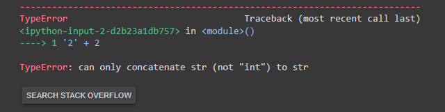
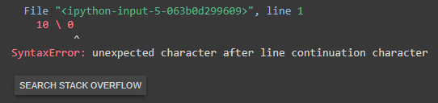

Tratativas de Erros
Tipos de Erros
- Variável "nome" não declarada:

- Soma entre "string" e "integer":

- Barra invertida como operador aritmético:

- Divisão de um valor por zero:

Explicação
Para que um código não "quebre" e acabe parando uma automação ou um script, é necessário fazer uma tratativa de erro. Para isso, o Python possui quatro palavras reservadas: try, except, else e finally.
- try:
- Bloco que executará o código principal.
- except:
- Bloco que criará um caminho alternativo à tentativa realizada anteriormente em caso de falha;
- Pode ser especificada (conforme documentação) ou de forma genérica.
- else:
- Bloco que efetuará a continuação do código escrito dentro do try em caso de sucesso.
- finally:
- Bloco que executará código independente do SUCESSO ou FALHA
Exemplo
def divisao(x, y):
try:
result = x / y
except ZeroDivisionError:
print('Erro de Divisão por Zero!')
except:
print('Erro não mapeado! E AGORA???')
else:
print(f'O resultado da divisão entre {x} e {y} é {result}')
finally:
print('Independente do que acontecer, sempre estarei aqui!')
Personalizando Um Erro
Explicação
O Python possui diversos erros já mapeados com textos prontos, porém é importante frisar que é possível personalizar a mensagem deles. Para isso, a linguagem conta com a palavra reservada raise.